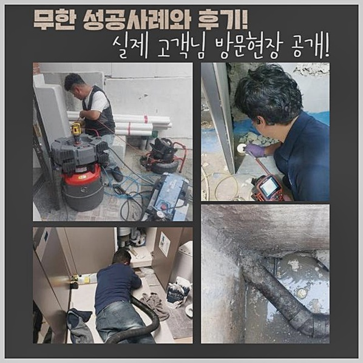
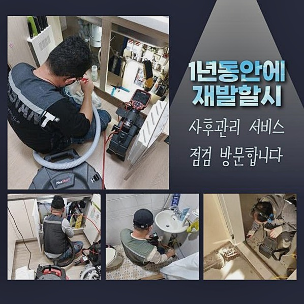
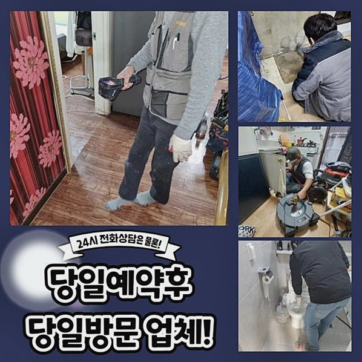
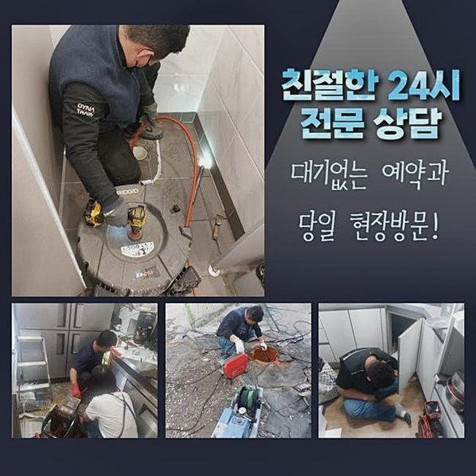
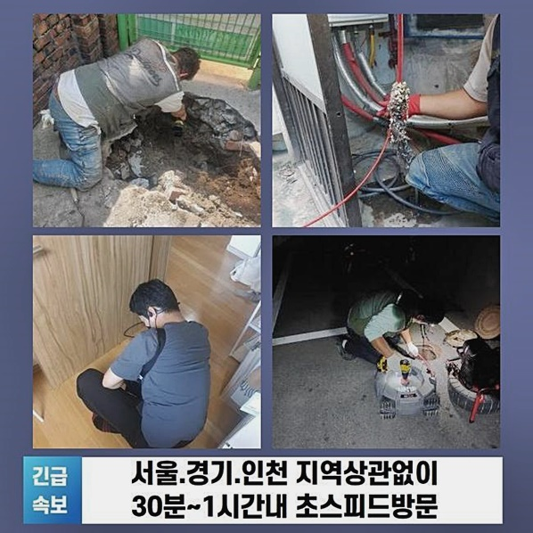
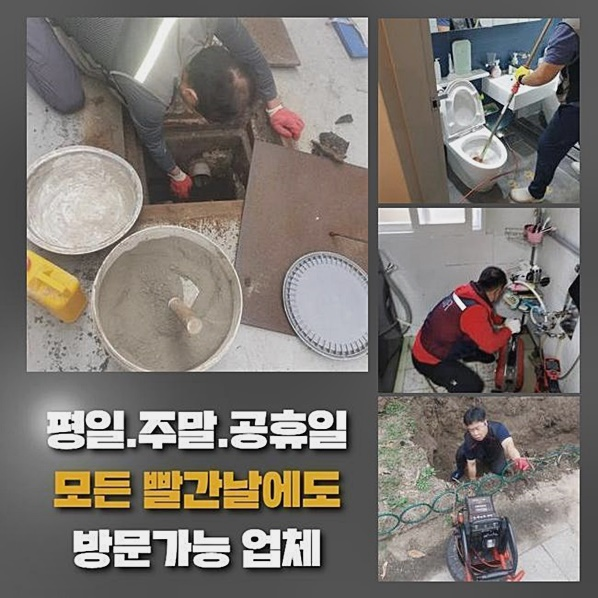

🏠 중구 충무로화장실뚫음 을지로동 오수맨홀청소 설비하는곳
용인 싱크대막힘 전문 시공 후기

📋 작업 개요
- 위치: 용인
- 서비스 유형: 싱크대막힘, 변기막힘, 하수구막힘, 배관막힘, 맨홀막힘, 역류해결, 뚫는업체, 배관청소, 고압세척, 설비공사
- 작업 일시: 2024. 9. 17. 20:15
- 업체명: 하수구수사대 (010-5615-2118)
🔍 문제 상황
중구 충무로화장실뚫음 을지로동 오수맨홀청소 설비하는곳
근래에 많은분들이 싱크대의 배관이 막혔을때 불러주시는데요
며칠전 일상 속에서 배관막힘 현상으로 불편해하셨던 의뢰자님의 현장을 공유하려 해요
의뢰자분께서 가정집 배관에서 청수가 막힌건지 흐르지않아 전화하셨어요
빨래를 하려고 사용하게 될때마다 하수들이 쏟아져 흐른다고 말씀해주셨어요
막혀버린 까닭을 찾아낸 뒤 불편사항들을 빠르게 해결할 목적으로 최대한 빠르게 현장으로 갔습니다
고객님댁에 도착한 뒤 발코니에서 결함이 생긴곳을 확인해 보았더니
의뢰를 해주실때 말씀하신거와 같이 세탁실에 위치한 하수구에 이물질로 가득해 오수가 흐름을 거스르는 모습을 확인할수 있었어요
하수구에서 바깥으로 나온 기름 덩어리도 둥둥 떠서 다니고 있는 모습을 보았어요
하수관을 뚫어내는 기기인 석션기계를 사용하여 오수가 고여있는 부분을 빨아내 제거한 뒤에
발코니에 있는 배관속에 빠져나오지 못한 찌꺼기도 함께 제거를 진행하였죠
가끔씩 생기는 단조로운 막힘은 강한 석션장비로 증세가 제거될수 있어요

🔎 원인 분석
💡 전문가 진단: 정밀 진단 장비를 사용하여 슬러지의 고착 여부를 판명하고 타격/세척 작업을 실시했습니다.
여러회차 석션 작업 후 수도를 조금 흐르게해 체크해 보았더니
잠깐동안은 하수가 흘러서 해결된 것 같았으나 대번에 다시금 물들이 차오르게 되었습니다
이번에는 복잡하지 않은 막힘이 아니더라구요
증상의 원인부를 직접 보는 기기로서 내시경을 통해 물이 흐르지않는 근본원인을 관찰하였어요
내시경기기는 유연한 소재로 제작된 와이어로 시작점에 카메라렌즈가 헤드부에 달린 장치로 쉽게 생각하면 일반건강검진을 받을때 사용하게되는 대장내시경기계와 같은 효과를 가진 장비에요
우리가 직접 확인할수 없는 배수관의 내부 상태를 확인하기 위해 사용해요
내시경기기를 밀어넣어 배수관 안을 상태를 확인해보니 모니터에 이물질과 오물로 인해 뭉쳐있는 형태가 확인되었습니다
물이 지나가는 길이 축소되어 있는 모습이었지만 심각할 정도는 아니였어요
내시경기기를 깊숙한 곳까지 밀어넣은 뒤 꺾여있는 관로의 내부까지 확인했더니
주방쪽 수전위치의 배수관과 맞닿는 장소에서 잔해들이 보이게 되었습니다
싱크볼 배관으로 수두룩하게 사용하게 되는 배관 파편이 깊숙히 들어가 있었어요
하수관 커버를 관통할 사이즈는 아닌것으로 주방인테리어 공사를 하며 남아있는 조각들을 흘려버린것 같아요

🔧 작업 과정
이러한 부스러기와 고착물이 부딪치는 일이 발생하면서 압력이 발생되어 배관에게 자극을 줄수도 있어 부서질수도 있다고합니다
세탁실의 세탁기와 싱크대 하수관과 하나로 되어있어 오염물들로 배관내부 까지 가로막혀서 양방향으로 물을 사용하게 될때마다 역류현상이 생길 수 있습니다
샤프트기를 사용하여 발코니부터 배수관 세척을 시행했습니다
샤프트기는 체인노커와 모터랑 연결된 스케일링 장비로 모터의 전원장치를 작동시킬 경우 앞쪽에 달려있는 헤드체인노커가 회전하며 돌아가는 장치입니다
헤드체인노커라는 불리우는 쇠사슬들의 돌아가는 힘으로 정체 되어있는 곳을 걷어내거나 배관세척이 가능한 부분입니다
사프트장비 운용을 시행해 내시경장비를 함께 운용하여 잔해가 제일 많은 곳 중점으로 목표설정하고 작업하였습니다
가끔씩 하수를 부으면서 분쇄를 도왔습니다
분쇄된 기름성분과 기름때는 석션기기를 써서 빨아들여 빼냈습니다
작업을 진행하던 중간 고객께서는 호스조각들이 어째서 배관 안쪽에 들어간 연유를 이해가 가지 않는다고 말해주셨습니다
과거에 리모델링 작업중 작업자의 실수들로 이런 결함이 발생했을 가망성이 있다고 말해드렸더니 당황하셨어요
저희작업자들은 의뢰자님께 가끔가다 상상하기 어려운 잔해물이 물이 흐르지않는 원인이 생기는 비슷한 상황을 설명을 하며 언제든 생길수있는 상황이라고 알려드렸어요
더구나 저희들은 유사경험들을 하게되며 문제점을 해결하였다고 부각시켜 안내드렸습니다
싱크볼에서 배관의 연결부위의 물이 흐르지않는 원인인 연결관을 제거 해보니 호스전체의 사이즈가 길쭉해 배수관을 가로막을 수 있음을 보게되었습니다
여러가지 잔해물들로 배관들이 막혀버려서 거실 세탁실과 주방싱크대 배관으로 서로 통하여 양측에서 물을 사용하게 될때마다 제기능을 하지못해 흐름을 거스르는 현상이 발현된것으로 확인되었습니다
원인들을 찾고나니 고객께서도 안심이 되신다 말씀하셨어요
주방싱크의 배수관을 뚫고 안에서 나왔던 잔해의 모습은 생각보다 많은걸 볼수있었어요
저희 전문진은 쓰레기는 분리하여 분리해서 액체류는 양변기에 처리하며 남아있는 잔해들은 폐기를위해 자취없이 처리했어요
문제점을 처리하고 싱크대의 배수관을 체크했습니다
거실의 발코니 모두 배수테스트를 확인하니 배수가 답답한 기색없이 배출되는 것까지 확인하였습니다


✅ 작업 완료
배관막힘이 있을때 발생된 문제점도 일어나지 아니한지 빈틈없이 체크를 하고 작업한 자리를 마무리 정리를 한뒤에 장비들을 가지고 복귀진행했습니다
갑자기 하수구에서 물들이 배출되지않는 경우 또는 역류현상 등 증세가 나타난다면 즉시 전문기술을 가진자에게 도움요청 하는것이 안전한 해결책이에요
현장마다 다른 문제점 제거 작업과 빠른 대응으로 문제점을 해결할 수 있기 때문입니다
저희들은 의뢰인분들이 불편없이 일반적인 삶을 지낼 수 있게 빠른 시간 내 꼼꼼하게 증상의 해결책을 찾아 드립니다
언제라도 의뢰 해주시면 친절하며 기술적인 해결서비스도 제공해 드립니다 최선을 다하겠습니다



⚠️ 주방 싱크대 배관 막힘 예방 수칙
- ✅ 기름기가 묻은 식기나 프라이팬은 설거지 전 키친타올로 반드시 기름때를 닦아내세요.
- ✅ 주기적으로 싱크대 개수대에 뜨거운 물을 가득 받아 한 번에 내려 배관 내부 기름을 씻어내세요.
- ✅ 배수구 거름망을 미세한 필터로 사용하시고 음식물 찌꺼기가 틈으로 새어 들지 않게 관리하세요.
- ✅ 베이킹소다와 식초를 뜨거운 물과 함께 일주일에 한 번씩 부어주면 배관 살균과 막힘 예방에 좋습니다.
💡 핵심 정리
- 확실한 장비 작업(내시경 점검 및 샤프트 스케일링)으로 원인을 뿌리 뽑습니다.
- 작업 후 1년 이내에 동일한 부위 재발 시 100% 무상 A/S 서비스를 보장합니다.
- 서울 · 경기 · 인천 전 지역에 24시간 언제든 긴급 출동할 수 있도록 항시 대기 중입니다.
❓ 자주 묻는 질문 (FAQ)
🚨 용인 싱크대막힘 문제로 고민이신가요?
정확한 원인 진단과 확실한 시공으로 재발 없는 해결을 약속드립니다.
24시간 긴급 출동 | 서울 · 경기 · 인천 전지역 | 1년 내 재발 시 무상 A/S